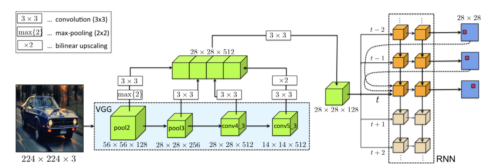
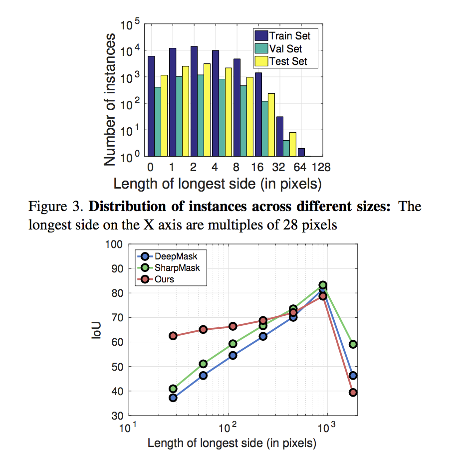

Table of Contents
1 Paper Title: Annotation OBject INstances with a Polygon RNN
2 Author: Casterjon et al
3 Details:
3.0.1 Motivation:
The paper discusses a new method in terms of object / instance segementation. It argues that at present the object segmentation techniques in use are data hungry and annotation cost for labelling all the pixels in an image is too expensive and error prone. To alleviate this problem the paper proposes the use of a segmentation method where the annotator would not have to label each and every pixel in the image. Instead the annotator can only draw a polygon around the object. Also the given method then can be used as a quick tool for annotation of images.
3.0.2 Previous Work:
Most of the previous work that try to reduce the cost of annotation have focused on using techquies of the form of weak supervision where, weak annotaions like bounding box or image tags used for instance segmentation task. Other works have used unsupervied/ weakly supervised method such as GrabCut for getting the segmentations. * I did not understand the term scribbles here*. Other than this there are no other previous work which grabed my attention.
3.0.3 Methodology:
Given an image and bounding box crop of the image, Polygon RNN predicts a polygon around the object in the given crop. More formally it credicts \[(c_t)_t\in\mathcal{N} c \in \matcal{R}^2 \]. A important point here is that for objects the polygon are generally closed, which is good since we need only predict the starting point. A closed polygon can does not have unique parameterisation. Suppose you have square parameterised as \[[(x1, y1), l]\] where \[x_1,y_1\] is the starting point and l is the length of side, another way of parameterising the same square could be \[[[x_2, y_2], l]\] where \[x_2, y_2\] is any other vertex on the square. This complicates a matter a little bit interms of learning since we can have multiple correct solutions. * Comment: Can't we just fix any of the verticies from the bounding box point as the starting point. A crude estimation but a simple way. How much does the starting point selection make changes in the prediction* Here is the full architecture: 
Polygon RNN architecture can be divided in two parts,
- CNN: The CNN part is used for feature learning of the given image. Here we can simply use the last layer for
feature learning since, the last layer only encodes the semanctic/global information about the image. For predicting the verticies of the polygon would require access to more basic features such as edges of the images, while also requiring the highler layer features. The higher layers features encode other important feature like which object, shape etc. The paper achives this by using skip connections which have been made popular by the resnets. The polygon RNN uses a modified vgg net with cutting of the final maxpool and fc layer. The output of the network is downsamples the input by a factor of 16./* This is significant, since we are essentially / / intrested finding verticies that span very short number of pixel in the original image.*/.
The features from pool2(56, 128), pool3(28, 256), conv43(28, 512), and conv53(14, 512) are concatenated together to form a image a feature vector of size 28*512. Which is passed through another convolutional network. * Not sure how the concatenation takes place*
- RNN: The paper uses a Conv-LSTM network for prediction of the verticies. A conv LSTM is a just like an regular LSTM with multiplication replaced by convolution. In
particular,
\begin{equation} \begin{bmatrix} i_{t} \\ f_{t} \\ o_{t} \\ g_{t} \end{bmatrix} = \mathbf{W}_h * h_{t-1} + \mathbf{W}_x * x_t + b \end{equation}Here \[i_t, f_t, o_t, g_t\] represents input, forget, ouput and update gate. The ConvLSTM takes at any time step is given 3 inputs, convolution features, vertex at t-1, vertex at t-2. We only need to give the 2 previous verticies in order to uniquely determine a the next vertex eg, again image a square, if we are given any points of the square we can easily find the orientation(clockwise or anti-clokwise) of the 3 point. Hence we need only 2 verticies to determine the 3rd. * Here the authors comments are all valid on the ground truth polyon. Don't think in terms of prediction here*.
The output of the RNN at each step is D*D one hot vector. The D represents the grid size of the prediction space./* Image the input image scaled down to D*D and we predict if a vertex exists or not at each pixel */. Having a staring vertex will help the rnn in knowning when to stop, since it has closed the loop.
We have still not discussed how does the RNN find the starting point. The authors use another auxillary network which consits of 2 mlp layers of D*D dimension. Where layer one(Object Boundary Layer) predicts if each pixel is boundary or not. The Object Boundary layer takes the features of CNN as input. The other layer predicts vertecies of the object. It takes as input the object features from the convolutional network and also the boundary predictions from the object boundary layer. It ouput D*D one hot vector of verticies. /* I still do not undertand how this can be used to input the starting vertex. My guess is they choose any vertex as the starting vertex which makes sense, since in a closed polygon any vertex could be thought of as the starting vertex. I think this layer is used for properly training the RNN network.*/
- Training:
The network is trained using adam with \[\beta_1 =0.9\] and \[\beta_2=0.99\]. The intial lerning rate of \[1e-4\] is used which is decayed by 10 every 10 epochs. A important trick the paper uses is target smoothing wherein nearby pixels of an ground truth(gt) vertex are also assigned non-zero probabilities, this helps network get positive feedback when it misses the vertex slightly./* This is okay for small sized images. But as the size of the input image is large, we down scale to D*D for prediction, close pixels in this dimension might not be actually be close to the vertex in the original image. The other things is that it is bad when the image is crowded*/
- The paper also uses teacher forcing a standard technique in training RNN's
- Data aumentation:
The paper uses the standard Random Flip, Enlarging the box, Randomly Selecting the start vertex
- Results
The results on Cityscapes Dataset are pretty intresting. The cityspace dataset consists of real world images from the cities in Germany. The dataset is not the large also, it only containes around 2975 training and 500 validation images. There are 8 object categories namely Person, Rider, Car, Truck, Bus, train, motorbike and bike. Though the distribution of the classes is highly skewed with ratio of maximum number of instances to minimum number of instances equal to 183. The average number of verticies for instace segmentation is around 70 and authors set the maximum number of time steps in LSTM model to that. * I did not read how the authors evaluated with other methods*
Bicylcle Bus Person Train Truck Motorcycle Car Rider Mean 52.13(+.05) 69.53(-4…) 63.94(10) 53.74(~-9) 68.03(+3.03) 52.07(~+1) 71.17(+~6) 56.83(+~4) 61.40(~1.2) We can see that on datasets that have really less number of instances the model fails to learn eg Train num of instances(136), Bus(352). But in the case of highest class the model has learn't considerably better eg Person. This indicates that the model is itself quite data hungry.
Another good results is in the figure 4 of the paper, which is plot between Iou vs Longest Length side. The polygon RNN method performs worse as the length of the side increases/* Maybe this could be attributed to the LSTM training. Since we know LSTM don't rember very long sequences (Vanishing Gradients)*/. This fact could also be contributed to less of data too since the longest lengths would be of the train and bus class/* No results are shown in the paper for per class side length*/

There is also, another very intresting result in the paper of using the annotatator in the loop, to see how many clicks are reduced when using the PolygonRNN model with human in loop. I did not look into this part of the paper.
- Comments
- I would like to see the feature maps of the convenet that was finetuned. The author's claim that CNN finetune to object boundaries and logical it seems that should be case(We are training on sort of the boundary detection task DUH!!!).
But i would still like to see the results.
- I also did understand the logic of predicting at 28*28 dimension. Instead of higher dimension.
- It could be because of the curse of dimensionality.Overall it was a well written paper but, i felt that choosing the intial start vertex could have been better explained. I also like papers were the author's generally give an
insight into what they were thinking will coming up with certain choices which was lacking. I also think this paper was made possible by the Cityspace dataset which provided the polygon annotations, I also belive the idea of the paper could have very well started from thinking what could be done with these polygon annotations.
- I would like to see the feature maps of the convenet that was finetuned. The author's claim that CNN finetune to object boundaries and logical it seems that should be case(We are training on sort of the boundary detection task DUH!!!).